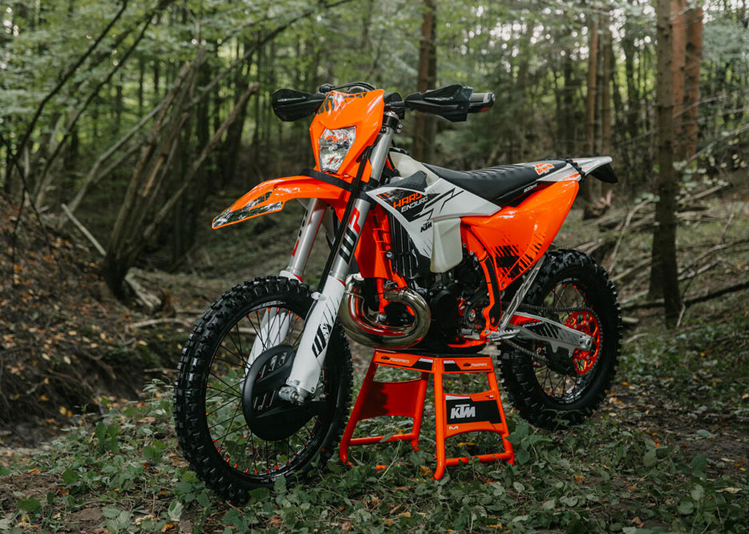
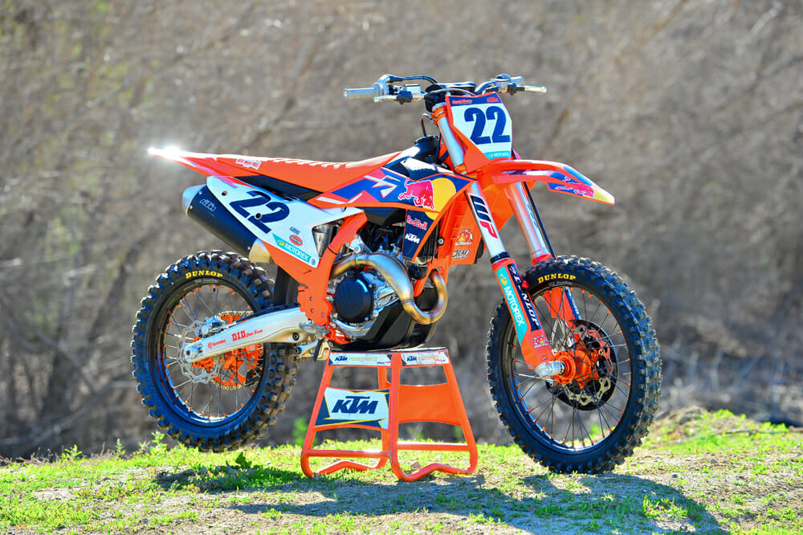

Allestimento moto per enduro, cross e allenamenti, con attenzione sia alla parte tecnica
che a quella pratica.
Componenti che montiamo spesso
- Protezioni (paramani, paracoppa, paratelaio, protezioni disco e pompa freno).
- Scarichi e terminali per migliorare erogazione e peso.
- Pedane, manubri, piastre e comandi più robusti e comodi.
- Corone, pignoni e rapporti adattati al tipo di percorso.
- Tubi freno in treccia e pastiglie con mescole più adatte all’uso.
Preparazione orientata all’utilizzo
Prima di montare pezzi a caso, si parte sempre da come userai la moto:
- Enduro lento e tecnico.
- Enduro veloce, fettucciati e gare regionali.
- Piste da cross o allenamenti intensivi.
Estetica e funzionalità
Oltre alla parte meccanica, si può lavorare anche su:
- Kit grafiche personalizzate.
- Sella con imbottitura diversa o coprisella con più grip.
- Piccoli dettagli come tappi in ergal, viti e componenti alleggeriti.
Galleria preparazioni
Alcune moto in fase di montaggio e finite.

